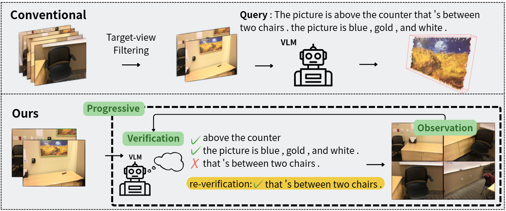
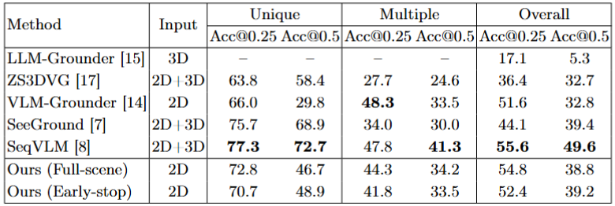
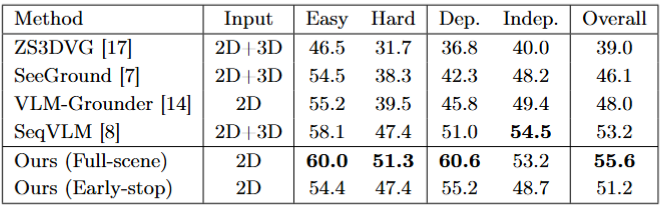
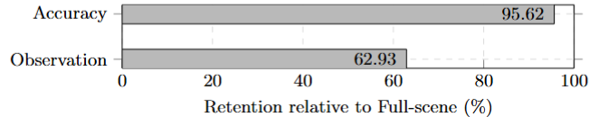
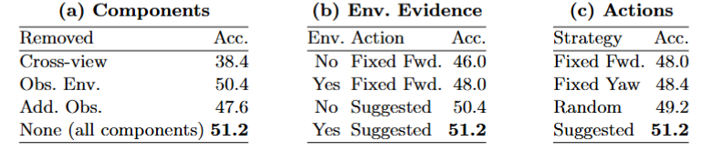

建立候選物件
從多視角 RGB-D 中偵測目標類別，並透過 Cross-view Matching 將不同視角中的同一物件合併成 Candidate。
Research Project
根據自然語言描述，在多視角 RGB-D 場景中逐步尋找並驗證目標物件；當目前視覺證據不足時，主動補充所需觀測，最後完成目標的三維定位。
 Figure 1. PROVE-3D overview pipeline
Figure 1. PROVE-3D overview pipeline
Problem Background
根據自然語言描述，在 3D 場景中找出並定位指定物件。不同於一般物件偵測，3D Visual Grounding 還需理解物件屬性、參考物件與空間關係，從多個相似物件中找出正確目標。
Zero-shot 表示不需針對 3D Visual Grounding 額外訓練，而是直接利用預訓練 VLM 完成定位。
本研究的核心問題是：多視角影像不一定包含足夠證據；系統需要判斷目前證據是否足夠，並在不足時取得額外觀測。
Research Problem
現有 Zero-Shot 3D Visual Grounding 方法多從既有多視角影像中挑選「看得到目標」的視角，再交由 VLM 判斷。然而，看得到目標不代表已具備足夠證據理解完整語言描述。
當 Query 涉及物件屬性、參考物件或空間關係時，例如「桌子旁邊的紅色椅子」，只觀察目標本身可能無法確認正確物件。固定處理大量視角，也可能增加不必要的觀測與推理成本。
PROVE-3D 因此將 3D Visual Grounding 視為漸進式觀測與驗證的過程，根據缺失的視覺證據動態補充視角，並在證據足夠時提早停止處理。
Target Visible → Grounding
Target Visible → Evidence Enough? → No → Acquire Additional Observation → Re-verify

Core Idea
研究目標是建立一套兼顧三維定位準確度與觀測效率的 zero-shot 3D visual grounding framework。
從多視角 RGB-D 中偵測目標類別，並透過 Cross-view Matching 將不同視角中的同一物件合併成 Candidate。
VLM 根據 Target、Attribute、Reference Object 與 Spatial Relation 判斷 Candidate 是否符合 Query。
若 VLM 判斷證據不足，系統會取得新的 Target View 或 Surrounding View，再重新驗證。
System Pipeline
整體流程分為三個主要部分：逐步建立候選、驗證並補充觀測、最後完成 2D-to-3D 定位。
A
Read Unit Create Candidate
系統逐步讀取 RGB-D 影像，偵測 Query 中的目標類別，並將不同視角中的同一物件整合成 Candidate。

解析 target、attribute、reference object、spatial relation。
逐步讀取 RGB-D views，偵測可能的目標物件。
將不同視角中的同一物件合併至同一 Candidate；無法匹配則建立新 Candidate。
B
Candidate Refinement
建立 Candidate 後，由 VLM 判斷是否符合完整 Query，以及目前證據是否足夠。
證據不足時，不直接決策，而是補充缺少的觀測後再驗證。
補充 Candidate 周圍的 reference object 與 spatial relation 證據。
根據 Candidate、環境資訊與 Query 判斷：True / False / Unsure。
若為 Unsure，VLM 分析缺少的條件，選擇 Forward / Yaw 補充觀測視角後重新驗證。
C
2D-to-3D Mapping
將確認後 Candidate 的多視角 mask 與 depth 投影至共同 3D 空間，融合並過濾後得到最終 3D Bounding Box。

取得各視角中的 Candidate mask。
結合 Depth、Camera Intrinsics、Pose，將多視角觀測投影並融合至 3D 空間。
去除離群點後，估計最終 3D Bounding Box。
Results
PROVE-3D 於 ScanRefer 與 Nr3D validation samples 上評估，並比較 Full-scene 與 Early-stop 兩種搜尋策略。
ScanRefer
54.8%Overall Acc@0.25ScanRefer
38.8%Overall Acc@0.5Nr3D
55.6%Overall AccuracyNr3D
60.6%View-Dependent
在相同 2D image-based setting 下，Full-scene 相較 VLM-Grounder：+3.2 pp @0.25、+6.0 pp @0.5。
PROVE-3D 在 Nr3D 的 Full-scene Overall 為 55.6%，並在 Easy、Hard、View-Dependent 等項目取得很強的結果，其中 View-Dependent 相較 SeqVLM 高 9.6 個百分點。

Early-stop
當 Candidate 已取得足夠證據並被可靠驗證後，Early-stop 可提前停止後續場景處理，在降低 Observation Demand 的同時保留大部分定位表現。


Ablation Study